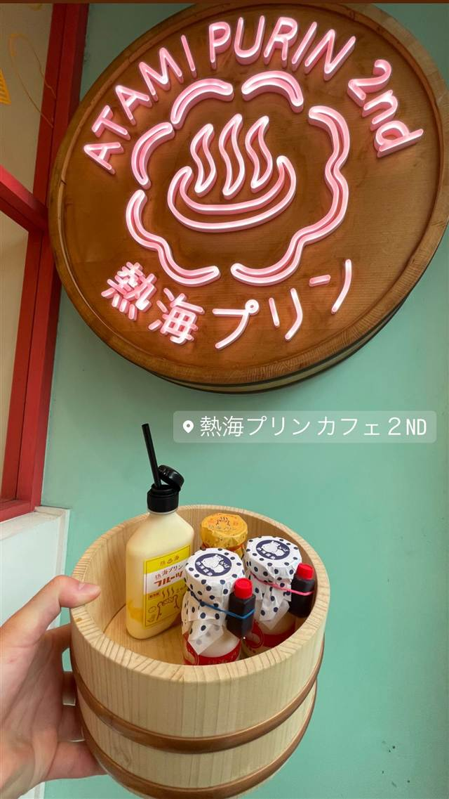

スイーツ · ケーキ・パフェ · 熱海銀座
熱海プリン カフェ2nd
浴槽やお風呂の桶のテーブルで味わうプリン
熱海プリンカフェ2ND
熱海プリンカフェ2ndは、行列必至の人気店「熱海プリン」の2号店として2018年に熱海銀座商店街にオープン。「みんなで楽しむおふろ」をテーマに、タイル張りの浴槽や風呂桶のテーブルでプリンを楽しめるユニークな内装が特徴。
TRIVIA
豆知識
- 「みんなで楽しむおふろ」がテーマで、タイル張りの浴槽やお風呂の桶を模したテーブルでプリンを味わえる、風呂をイメージした内装になっている
REVIEWS
世間の評判
3.56食べログ
銭湯風の内装とかためプリン
- とろとろでなめらかな口当たりの濃厚なプリンを評価する声が非常に多い
- 銭湯をテーマにした可愛らしい内装や風呂桶での提供を楽しむ声が多い
- 日曜でも行列が絶えず時間帯によっては売り切れることも多いという声がある
- ゆっくり座ってカフェとして長居するには向かないという声もある
食べログ 口コミ743件
| 創業 | 2018年7月28日開業 |
|---|---|
| 系譜 | 行列のできるプリン専門店「熱海プリン」の2号店 |
| 看板 | プリン |
| どこから | 日帰りで行ける遠さ |
| 行くなら | 行列 |
| 営業時間 | 月〜日 10:00-18:00 |
| 予算 | 昼 ～¥999 夜 ～¥999 |
| 定休日 | 無休 |
| 予約 | 予約不可 |
| 場所 | 来宮駅 静岡県熱海市銀座町10-22 沢口ビル1F |
| メモ | 熱海銀座商店街内。かつて町の中心だった商店街の賑わいを取り戻したいという思いから誘致・出店された。 |
食べたもの：店の看板とプリン
NEARBY
近い店・同じ系統の店
-
 ケーキ・パフェ 目白駅
AIGRE DOUCE（エーグルドゥース）
クープ・デュ・モンド準優勝シェフの苺のショートケーキ
昼 ¥1,000～¥1,999 夜 ¥1,000～¥1,999
ケーキ・パフェ 目白駅
AIGRE DOUCE（エーグルドゥース）
クープ・デュ・モンド準優勝シェフの苺のショートケーキ
昼 ¥1,000～¥1,999 夜 ¥1,000～¥1,999
-
 ケーキ・パフェ 自由が丘
パティスリー パリ セヴェイユ
ラデュレ仕込みの技が光るカヌレ、食べログ百名店の一軒
昼 ¥1,000～¥1,999 夜 ¥1,000～¥1,999
ケーキ・パフェ 自由が丘
パティスリー パリ セヴェイユ
ラデュレ仕込みの技が光るカヌレ、食べログ百名店の一軒
昼 ¥1,000～¥1,999 夜 ¥1,000～¥1,999
-
 ケーキ・パフェ 代々木公園駅
ナタ・デ・クリスチアノ（Nata de Cristiano's）
姉妹店の人気デザートが独立したポルトガル風エッグタルト
昼 ～¥999 夜 ～¥999
ケーキ・パフェ 代々木公園駅
ナタ・デ・クリスチアノ（Nata de Cristiano's）
姉妹店の人気デザートが独立したポルトガル風エッグタルト
昼 ～¥999 夜 ～¥999
-
 ケーキ・パフェ 白金高輪駅
メゾン・ダーニ（MAISON D'AHNI）
本場ビアリッツの老舗で出会った郷土菓子ガトーバスク
昼 ¥1,000～¥1,999
ケーキ・パフェ 白金高輪駅
メゾン・ダーニ（MAISON D'AHNI）
本場ビアリッツの老舗で出会った郷土菓子ガトーバスク
昼 ¥1,000～¥1,999
-
 ケーキ・パフェ 武蔵小山
パティスリィ ドゥ・ボン・クーフゥ 武蔵小山本店
月替わりパルフェは完全予約制のイートイン限定で持ち帰りができない
昼 ¥3,000～¥3,999 夜 ¥4,000～¥4,999
ケーキ・パフェ 武蔵小山
パティスリィ ドゥ・ボン・クーフゥ 武蔵小山本店
月替わりパルフェは完全予約制のイートイン限定で持ち帰りができない
昼 ¥3,000～¥3,999 夜 ¥4,000～¥4,999
-
 ケーキ・パフェ 銀座
珈琲専門店 三十間 銀座本店
地下の隠れ家で味わうふわふわチーズケーキとコーヒー
昼 ¥1,000～¥1,999 夜 ¥1,000～¥1,999
ケーキ・パフェ 銀座
珈琲専門店 三十間 銀座本店
地下の隠れ家で味わうふわふわチーズケーキとコーヒー
昼 ¥1,000～¥1,999 夜 ¥1,000～¥1,999